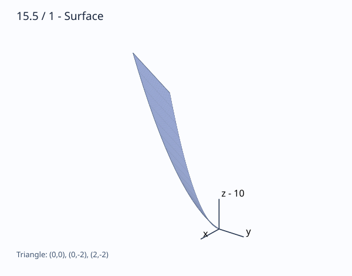

문제 요약
곡면 \(z=x + y^{2} + 10\)의 \(-2\le y\le0,\ 0\le x\le-y\) 위 부분의 넓이를 구하라.

힌트. 투영영역을 구한 뒤 곡면 면적요소를 적분한다.
해설.
편미분으로 면적요소를 구한다. \[f_x=1,\quad f_y=2 y,\quad dS=\sqrt{4 y^{2} + 2}\,dx\,dy\]
투영영역에 적분한다. \[A=\int_{-2}^{0}\int_{0}^{- y}\left(\sqrt{4 y^{2} + 2}\right)\,dx\,dy\]
\(x\) 적분을 수행한다. \[\int_{0}^{- y}\left(\sqrt{4 y^{2} + 2}\right)\,dx=- y \sqrt{4 y^{2} + 2}\]
\(y\) 적분을 수행한다. \[\int_{-2}^{0}\left(- y \sqrt{4 y^{2} + 2}\right)\,dy=\frac{13 \sqrt{2}}{3}\]
최종 답. \[A=\frac{13 \sqrt{2}}{3}\]
검산·주의점. 면적요소와 경계를 대조하고, 명시된 적분을 기호 계산 또는 서로 다른 정밀도의 수치 계산으로 검산했다.
Problem summary
Find the area of \(z=x + y^{2} + 10\) above \(-2\le y\le0,\ 0\le x\le-y\).
Hint. Find the projection and use \(\sqrt{1+f_x^2+f_y^2}\,dx\,dy\).
Solution.
Differentiate to form the area element. \[f_x=1,\quad f_y=2 y,\quad dS=\sqrt{4 y^{2} + 2}\,dx\,dy\]
Integrate over the projection. \[A=\int_{-2}^{0}\int_{0}^{- y}\left(\sqrt{4 y^{2} + 2}\right)\,dx\,dy\]
Integrate with respect to \(x\). \[\int_{0}^{- y}\left(\sqrt{4 y^{2} + 2}\right)\,dx=- y \sqrt{4 y^{2} + 2}\]
Integrate with respect to \(y\). \[\int_{-2}^{0}\left(- y \sqrt{4 y^{2} + 2}\right)\,dy=\frac{13 \sqrt{2}}{3}\]
Final answer. \[A=\frac{13 \sqrt{2}}{3}\]
Check and conditions. The area element and boundary were verified.